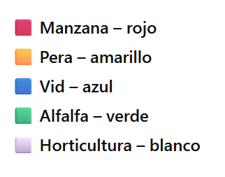

5. Capítulo 4: Entrenamientos Supervisados con Embeddings#
5.1. Embeddings satelitales como puente entre percepción y semántica#
En teledetección, la transición del píxel al concepto exige representaciones que capten no solo reflectancias puntuales sino también patrones espaciales, temporales y contextuales. Los embeddings satelitales cumplen ese rol: proyectan cada píxel/región a un espacio latente de dimensión fija donde proximidad geométrica ≈ similitud semántica. Esta capa intermedia —aprendida mediante auto-supervisión a gran escala— habilita operaciones que antes dependían de umbrales rígidos o reglas ad-hoc: búsqueda por similitud, transferencia a nuevas zonas/fechas y clasificación con menos etiquetas.
Este capítulo muestra cómo operacionalizar embeddings [] de GEE en flujos de trabajo reproducibles sobre Google Earth Engine (GEE), combinándolos con índices espectrales, radar y máscaras temáticas. Reúne tres casos complementarios:
Búsqueda: Agua por similitud coseno.
Usamos un conjunto de polígonos de referencia (lagos/embalses) para construir vectores de “prototipo” y localizar, por similitud coseno, regiones del territorio que “se parecen” estadísticamente al agua. El resultado se expresa como isócronas de similitud (≥ 98 %, ≥ 99 %, ≈ 100 %), con opción de enmascarar usando JRC Global Surface Water.Búsqueda: Hornos de ladrillo con filtros post “fail-open”.
La similitud latente aporta un mapa continuo de afinidad con muestras de ladrilleras. Para robustecer, se añaden filtros espectrales (NDVI/NDBI/BSI), de radar Sentinel-1 y de agua (JRC) bajo una lógica fail-open: se incorpora cada filtro solo si no elimina prácticamente toda la cobertura candidata. Esto reduce falsos positivos sin destruir hallazgos reales.Clasificación supervisada de cultivos (RF + embeddings).
Combinamos embeddings anuales con fenología Sentinel-2 (NDVI/EVI/NDRE/NDWI), probabilidades de Dynamic World (crops/trees) [] y una máscara agrícola (ESA WorldCover + MODIS + DW). Con puntos de campo etiquetados entrenamos un Random Forest, evaluamos con hold-out y generamos un mapa categórico de cultivos con vectorización por clase y elementos de UI (leyenda y gráfico de barras).
Los ejemplos mostrados en este capítulo están basados en los tutoriales de GEE sobre Embeddings y en los ejemplos de [].
5.2. Aporte metodológico#
Métrica de significado: La similitud coseno entre un prototipo de clase (promedio de embeddings sobre polígonos) y cada píxel del mosaico latente da un continuo semántico más estable que índices únicos.
Combinación de evidencias: Los embeddings no sustituyen a la teledetección clásica; la síntesis espectral-radar-temática (S2, S1, JRC, Dynamic World, WorldCover, MODIS) aumenta precisión y capacidad de generalización.
Robustez práctica: El patrón fail-open evita “cegar” el algoritmo cuando un filtro resulta demasiado restrictivo para ciertas zonas/fechas.
Transferencia y supervisión ligera: Con pocas etiquetas, la capa latente facilita búsqueda/seed-finding y acelera la construcción de datasets para entrenar clasificadores.
5.3. ¿Qué aprenderás (learning outcomes)?#
Al finalizar, podrás:
Construir vectores de referencia a partir de muestras poligonales y aplicarlos a búsqueda por similitud (agua, ladrilleras, etc.).
Integrar máscaras temáticas (JRC, Dynamic World, WorldCover/MODIS) e índices (NDVI/NDBI/BSI, S1 dB) para restringir hipótesis y reducir ruido.
Diseñar un pipeline de clasificación supervisada (RF) con evaluación estratificada, balanceo por clase y post-procesado específico.
Vectorizar resultados, calcular métricas de área y presentar hallazgos con elementos de UI en GEE.
5.4. Requisitos y supuestos#
Conocimientos de GEE (JavaScript API), índices espectrales y radar a nivel intermedio.
Etiquetas de entrenamiento (puntos o polígonos) de calidad y representatividad espacial.
Comprensión básica de aprendizaje automático (train/valid split, error matrix, macro/weighted F1).
5.5. Buenas prácticas que atraviesan los ejemplos#
Normalización y saneo: controlar no-data con
unmask(0)antes de reducir; verificar coberturas.Umbrales interpretables: exponer ≥ 0.98/0.99/≈ 1.0 para interpretabilidad; complementar con percentil adaptativo en escenarios complejos.
Validación explícita: estimar min/max/pXX de similitud dentro de la ROI o máscara; matrices de confusión y métricas por clase en supervisado.
Control espacial del muestreo: espaciar muestras para evitar overfitting geográfico.
Composición multi-fuente: sumar S1 cuando S2 es ambiguo; usar JRC/DW para excluir agua/grass o favorecer crops/trees.
Transparencia: mantener prints diagnósticos (coberturas, conteos, percentiles) y capas de control conmutables.
5.6. Lectura del capítulo#
Búsqueda: Agua por similitud — construye el concepto de “prototipo de clase” y muestra su lectura como isócronas de similitud.
Búsqueda: Ladrilleras + fail-open — enseña a endurecer hipótesis con filtros espectrales/radar sin perder hallazgos.
Clasificación de cultivos — cierra integrando embeddings con fenología y máscaras, más evaluación y UI.
Esta secuencia ilustra una idea central: los embeddings expanden lo que podemos “preguntarle” a las imágenes. No reemplazan la física de la señal; la organizan en un espacio donde buscar, transferir y clasificar se vuelve más estable y componible.
5.7. Búsqueda: Agua (explicación del script)#
El esquema para este algoritmo es:
5.7.1. 0) Entradas#
El bloque asume dos insumos principales:
roi: región de estudio (Geometry o FeatureCollection).
samples: polígonos de referencia que representan agua.
var geometry = roi.geometry();
Map.setOptions('SATELLITE');
Map.addLayer(roi, {color: 'red'}, 'ROI');
Map.addLayer(samples, {color: 'deepskyblue'}, 'Samples (agua)');
Map.centerObject(geometry, 7);
5.7.2. 1) Parámetros#
Define los controles del análisis temporal y espacial:
Año de referencia (2024).
scale: resolución de trabajo (20 m).USE_JRC_MASK: sitrue, aplica máscara JRC Global Surface Water.JRC_OCC_MIN: umbral mínimo de ocurrencia de agua.MIN_AREA_SQM: área mínima para descartar polígonos pequeños.
5.7.3. 2) Embedding anual#
Carga la colección y recorta a la región de interés:
var embeddings = ee.ImageCollection('GOOGLE/SATELLITE_EMBEDDING/V1/ANNUAL');
var mosaic = embeddings.filterDate(startDate, endDate).mosaic().clip(geometry);
var bandNames = mosaic.bandNames();
5.7.4. 3) Máscara JRC opcional#
Si USE_JRC_MASK es true, enmascara los píxeles con baja ocurrencia de agua:
var mosaicMasked = ee.Image(ee.Algorithms.If(
USE_JRC_MASK,
mosaic.updateMask(ee.Image('JRC/GSW1_4/GlobalSurfaceWater')
.select('occurrence').gte(JRC_OCC_MIN)),
mosaic
));
Luego se rellenan valores nulos con ceros (unmask(0)) para evitar problemas en los reductores.
5.7.5. 4) Vector de referencia por polígono#
Cada polígono de muestra genera un vector promedio del embedding, evitando nulls:
var samplesMeanVec = samples.map(function(f){
var d = refImage.reduceRegion({
reducer: ee.Reducer.mean(),
geometry: f.geometry(),
scale: scale
});
return f.set(fillNullsWithZeros(d, bandNames));
});
5.7.6. 5) Similitud coseno#
La similitud coseno mide la afinidad entre cada píxel y los vectores de muestra:
Se calcula por píxel, normalizando ambos vectores a norma 1 y quedándose con el máximo de similitud.
5.7.7. 6) Polígonos por umbral#
La función areasAtThreshold() vectoriza regiones según distintos niveles de similitud:
≥ 0.98: coincidencia alta.
≥ 0.99: coincidencia muy alta.
≈ 1.00: coincidencia casi perfecta.
var poly98 = areasAtThreshold(cosineMax, 0.98);
var poly99 = areasAtThreshold(cosineMax, 0.99);
var poly100 = areasAtThreshold(cosineMax, 0.999);
5.7.8. 7) Visualización#
Se muestran los resultados por color:
Amarillo → ≥ 98 %
Naranja → ≥ 99 %
Cian → ≈ 100 %
5.7.9. 8) Exportación opcional#
Permite guardar el resultado como FeatureCollection para reutilizar en otros flujos:
var polysAll = ee.FeatureCollection(poly98.merge(poly99).merge(poly100));
// Export.table.toAsset({ ... });
En resumen, este procedimiento aplica embeddings satelitales como una forma de búsqueda semántica geográfica, comparando cada píxel con ejemplos de referencia y extrayendo regiones del territorio que “se parecen” estadísticamente a tus muestras.
// ============================================================
// DETECCIÓN DE CUERPOS DE AGUA POR SIMILARIDAD DE EMBEDDINGS
// Requiere: 'roi' (Geometry/FC) y 'samples' (FC de POLÍGONOS de agua)
// Salida: POLÍGONOS ≥98%, ≥99% y ≈100% (cosine closeness)
// ============================================================
// ---------- 0) Entradas ----------
// Definir roi (region de interés o estudio): Prov. Neuquén y Rio Negro
var geometry = roi.geometry();
Map.setOptions('SATELLITE');
Map.addLayer(roi, {color: 'red'}, 'ROI', true);
Map.addLayer(samples, {color: 'deepskyblue'}, 'Samples (polígonos de agua)', true);
Map.centerObject(geometry, 7);
// ---------- 1) Parámetros ----------
var year = 2024;
var startDate = ee.Date.fromYMD(year, 1, 1);
var endDate = startDate.advance(1, 'year');
var scale = 20; // 10–30 m según el tamaño de cuerpos de agua
var USE_JRC_MASK = true; // ← poné false si NO querés enmascarar por agua
var JRC_OCC_MIN = 30; // % de ocurrencia mínima (10–50 típico)
var MIN_AREA_SQM = 0; // área mínima para descartar slivers (p.ej. 5000)
// ---------- 2) Embedding anual ----------
var embeddings = ee.ImageCollection('GOOGLE/SATELLITE_EMBEDDING/V1/ANNUAL');
var mosaic = embeddings
.filterDate(startDate, endDate)
.mosaic()
.clip(geometry);
var bandNames = mosaic.bandNames();
// ---------- 3) (Opcional) Máscara de agua JRC ----------
var mosaicMasked = ee.Image(ee.Algorithms.If(
USE_JRC_MASK,
mosaic.updateMask(ee.Image('JRC/GSW1_4/GlobalSurfaceWater')
.select('occurrence').gte(JRC_OCC_MIN)),
mosaic
));
// Para construir vectores de referencia, evitamos nulls:
var refImage = mosaicMasked.unmask(0);
// ---------- 4) Vector de referencia por POLÍGONO (promedio) ----------
function fillNullsWithZeros(dict, bands) {
dict = ee.Dictionary(dict);
bands = ee.List(bands);
return ee.Dictionary(
bands.iterate(function(b, acc) {
b = ee.String(b);
var v = dict.get(b);
v = ee.Algorithms.If(v, v, 0); // null -> 0
return ee.Dictionary(acc).set(b, v);
}, ee.Dictionary({}))
);
}
var samplesMeanVec = ee.FeatureCollection(samples)
.filterBounds(geometry)
.map(function(f) {
var d = refImage.reduceRegion({
reducer: ee.Reducer.mean(),
geometry: f.geometry(), // promedio sobre TODO el polígono
scale: scale,
maxPixels: 1e10,
bestEffort: true,
tileScale: 4
});
var dFilled = fillNullsWithZeros(d, bandNames);
return f.set(dFilled);
});
print('Cant. polígonos de muestra:', samplesMeanVec.size());
print('Ejemplo de vector de muestra:', samplesMeanVec.first());
// ---------- 5) Similitud coseno (0..1) y "máximo por muestra" ----------
// Normalizamos el mosaico a unidad por píxel
var mosaicNorm = mosaicMasked.pow(2).reduce('sum').sqrt();
var mosaicUnit = mosaicMasked.divide(mosaicNorm.where(mosaicNorm.eq(0), 1));
// Para cada polígono-muestra → coseno contra el mosaico unitario
var cosinePerSample = ee.ImageCollection(
samplesMeanVec.map(function (f) {
var sImg = ee.Image(f.toArray(bandNames)).arrayFlatten([bandNames]);
var sNorm = sImg.pow(2).reduce('sum').sqrt();
var sUnit = sImg.divide(sNorm.where(sNorm.eq(0), 1));
var cos = sUnit.multiply(mosaicUnit).reduce('sum'); // [-1, 1]
return cos.add(1).divide(2).rename('cosine_closeness'); // [0, 1]
})
);
// Similar a ALGÚN polígono de muestra (no promedio)
var cosineMax = cosinePerSample.max().rename('cosine_closeness');
// (Opcional) visual continuo
Map.addLayer(
cosineMax,
{min: 0, max: 1, palette: ['000004','2C105C','711F81','B63679','EE605E','FDAE78','FCFDBF','FFFFFF']},
'Cosine closeness (MAX por muestra)',
false
);
// ---------- 6) Polígonos por umbral ----------
function areasAtThreshold(img, th) {
var mask = img.gte(th).selfMask();
var polys = mask.reduceToVectors({
geometry: geometry,
scale: scale,
eightConnected: true,
maxPixels: 1e10,
tileScale: 4
});
// Atributos y filtro de área mínima (opcional)
polys = polys.map(function(f) {
var maxClose = img.reduceRegion({
reducer: ee.Reducer.max(),
geometry: f.geometry(),
scale: scale,
maxPixels: 1e10,
tileScale: 4
}).get(img.bandNames().get(0));
var area = f.geometry().area(scale); // m²
return f.set({'threshold': th, 'cosine_close': maxClose, 'area_m2': area});
});
if (MIN_AREA_SQM > 0) {
polys = polys.filter(ee.Filter.gte('area_m2', MIN_AREA_SQM));
}
return polys;
}
// SOLO ≥98%, ≥99% y ≈100%
var poly98 = areasAtThreshold(cosineMax, 0.98);
var poly99 = areasAtThreshold(cosineMax, 0.99);
var poly100 = areasAtThreshold(cosineMax, 0.999); // 1.0 exacto es raro
// ---------- 7) Mostrar POLÍGONOS ----------
Map.addLayer(poly98, {color: 'yellow'}, 'Áreas ≥ 98%', true);
Map.addLayer(poly99, {color: 'orange'}, 'Áreas ≥ 99%', true);
Map.addLayer(poly100, {color: 'cyan'}, 'Áreas ≈ 100%', true);
print('Áreas ≥98%:', poly98.size(),
' ≥99%:', poly99.size(),
' ≈100%:', poly100.size());
// ---------- 8) (Opcional) Exportar a Asset ----------
var polysAll = ee.FeatureCollection(poly98.merge(poly99).merge(poly100));
// Export.table.toAsset({
// collection: polysAll,
// description: 'WaterLike_Polygons_98_99_100',
// assetId: 'projects/tu-proyecto/assets/waterlike_polygons_98_99_100'
// });
5.8. Búsqueda: Hornos de Ladrillo#
El esquema del algoritmo es:
5.8.1. 0) Entradas#
La primera etapa prepara la geometría de trabajo y la vista del mapa.
var geometry = ee.FeatureCollection(roi).geometry(1);
Esta instrucción toma tu roi (que puede ser una Geometry o FeatureCollection), la convierte en colección y extrae su geometría con un margen de 1 m, evitando topologías degeneradas.
Luego, se configura el fondo satelital y se dibujan dos capas:
El ROI en rojo.
Las muestras (polígonos de ladrilleras) en amarillo.
Map.setOptions('SATELLITE');
Map.addLayer(roi, {color: 'red'}, 'ROI');
Map.addLayer(samples, {color: 'yellow'}, 'Samples (ladrilleras)');
Map.centerObject(roi, 10);
💡 Las líneas comentadas ofrecen un “plan B” para ROIs complejos: aplican una unión con margen y un
buffer(0)para sanear geometrías auto-intersectadas.
5.8.2. 1) Parámetros#
Define la ventana temporal, la escala de análisis y los controles de filtrado.
year,startDate,endDate: trabajo sobre el año 2024.scale = 20: resolución para reducción y vectorización (usar 10 m para sitios pequeños).USE_FILTERS: activa o desactiva todos los filtros POST de una vez.
Umbrales de índices:
NDVI_MAX: vegetación baja → ladrilleras suelen ser suelos desnudos o construcciones.NDBI_MIN,BSI_MIN: realzan zonas construidas o de suelo desnudo.S1_VV_MINdB,S1_VH_MINdB: mínimos radar (dB) para descartar superficies muy lisas o húmedas.EXCLUDE_WATER: excluye agua si estrue.MIN_AREA_SQM,MAX_AREA_SQM: filtro de área (en m²).T98,T99,T100: umbrales fijos de similitud coseno reescalada (0.98, 0.99, ≈1.0).
5.8.3. 2) Embedding (sin máscara previa)#
Se carga el embedding anual de Google y se construye un mosaico del período:
var embeddings = ee.ImageCollection('GOOGLE/SATELLITE_EMBEDDING/V1/ANNUAL');
var mosaic = embeddings.filterDate(startDate, endDate).mosaic().clip(geometry);
var bandNames = mosaic.bandNames();
🛰️ No se aplica máscara de agua ni nubes aún; esto se realiza luego mediante filtros POST.
5.8.4. 3) Vector de referencia (promedio en polígono)#
Cada polígono de muestra se transforma en un vector promedio del embedding.
Primero se rellenan valores nulos con cero para evitar errores:
var refImage = mosaic.unmask(0);
La función fillNullsWithZeros reemplaza valores null por 0 en el diccionario resultante de reduceRegion.
El promedio por banda sobre cada polígono se obtiene mediante:
reduceRegion({
reducer: ee.Reducer.mean(),
geometry: f.geometry(),
scale: scale
});
El resultado (samplesMeanVec) es una colección donde cada muestra incluye su vector promedio del embedding.
5.8.5. 4) Similitud coseno (0..1) en todo el ROI#
Se calcula qué tan parecido es cada píxel del ROI a las muestras.
La similitud coseno se reescala a [0,1] y se denomina cosine_closeness.
Se toma el máximo entre todas las muestras (cosinePerSample.max()), quedándose con la mejor coincidencia por píxel.
5.8.6. 5) Filtros POST con “fail-open”#
Se construye una máscara candidata multiplicando filtros sin destruir cobertura útil.
candidateMask comienza como 1 (todo permitido).
maskCoverage(img) evalúa la cobertura media (0–1).
safeAnd(baseMask, newMask, label) aplica un AND seguro, evitando eliminar toda la región.
Filtros aplicados:
Sentinel‑2: cálculo de NDVI, NDBI, BSI tras mediana sin nubes (QA60).
Sentinel‑1: conversión a dB y aplicación de VV/VH mínimos.
JRC Water: excluye agua si
EXCLUDE_WATER = true(occurrence < 10 %).
Se imprime la cobertura resultante y se agrega la máscara como capa de diagnóstico.
5.8.7. 6) Aplicar máscara POST a la similitud#
var cosMasked = cosineMax.updateMask(candidateMask);
Esto limita la similitud a zonas plausibles de ladrilleras.
Luego se calculan estadísticas (min, max, p90..p99) dentro de la máscara para verificar la distribución de similitudes.
5.8.8. 7) Polygonización y filtro de área#
Convierte zonas con alta similitud en polígonos aplicando:
areasAtThreshold(img, th)
Esta función vectoriza las regiones y calcula:
area_m2: área en metros cuadrados.cosine_close: similitud máxima dentro del polígono.
Se filtra por área y se generan tres capas: ≥ 0.98, ≥ 0.99 y ≈ 1.0.
5.8.9. 8) Umbral adaptativo (respaldo)#
Cuando los umbrales fijos no funcionan bien, se calcula un percentil dinámico (por defecto, P99).
var percDict = cosMasked.reduceRegion({
reducer: ee.Reducer.percentile([99]),
geometry: geometry,
scale: scale
});
Si no hay datos suficientes, se usa 0.95 como respaldo.
La capa adaptativa se vectoriza y añade para comparación.
5.8.10. 9) Exportación opcional#
Finalmente, se combinan las colecciones o se exporta la adaptativa:
var allPolys = ee.FeatureCollection(poly98.merge(poly99).merge(poly100));
// Export.table.toAsset({...});
Esto permite versionar y reutilizar los resultados sin recalcular toda la pipeline.
Conclusión:
El procedimiento usa embeddings satelitales como modelo semántico del territorio, permitiendo detectar ladrilleras por similitud estadística y no por umbrales fijos de bandas.
La integración con filtros espectrales y radar asegura robustez ante ruido y variabilidad regional.
// ============================================================
// LADRILLERAS con Embeddings + Filtros POST "fail-open"
// Si un filtro deja cobertura ~0, se omite automáticamente.
// Requiere: 'roi' y 'samples' (polígonos de ladrilleras) definidos por el usuario.
// ============================================================
// ---------- 0) Entradas ----------
var geometry = ee.FeatureCollection(roi).geometry(1); // ← margen no-cero
Map.setOptions('SATELLITE');
Map.addLayer(roi, {color:'red'}, 'ROI', true);
Map.addLayer(samples, {color:'yellow'}, 'Samples (ladrilleras)', true);
Map.centerObject(roi, 10); // ← centrar sobre la FC
// (Opcional, por si tu ROI fuese muy complejo, descomentar la siguiente línea):
// geometry = ee.FeatureCollection(roi).union(1).geometry(1); // unión con margen
// geometry = geometry.buffer(0, 1); // “sanear” topología si hiciera falta
// ---------- 1) Parámetros ----------
var year = 2024;
var startDate = ee.Date.fromYMD(year, 1, 1);
var endDate = startDate.advance(1, 'year');
var scale = 20; // probá 10 si los sitios son chicos
var USE_FILTERS = true; // activar/desactivar filtros POST
// Filtros (arrancar LAxo; luego endurecer)
var NDVI_MAX = 0.35;
var NDBI_MIN = -0.05;
var BSI_MIN = -0.05;
var S1_VV_MINdB = -15;
var S1_VH_MINdB = -22;
var EXCLUDE_WATER= true;
// Área mínima/máxima (m²)
var MIN_AREA_SQM = 1500;
var MAX_AREA_SQM = 300000;
// Umbrales fijos
var T98 = 0.98, T99 = 0.99, T100 = 0.999;
// ---------- 2) Embedding (SIN máscara previa) ----------
var embeddings = ee.ImageCollection('GOOGLE/SATELLITE_EMBEDDING/V1/ANNUAL');
var mosaic = embeddings.filterDate(startDate, endDate).mosaic().clip(geometry);
var bandNames = mosaic.bandNames();
// ---------- 3) Vector de referencia (promedio en polígono, robusto) ----------
var refImage = mosaic.unmask(0);
function fillNullsWithZeros(dict, bands) {
dict = ee.Dictionary(dict); bands = ee.List(bands);
return ee.Dictionary(bands.iterate(function(b, acc){
b = ee.String(b);
var v = dict.get(b);
v = ee.Algorithms.If(v, v, 0);
return ee.Dictionary(acc).set(b, v);
}, ee.Dictionary({})));
}
var samplesMeanVec = ee.FeatureCollection(samples)
.filterBounds(geometry)
.map(function(f){
var d = refImage.reduceRegion({
reducer: ee.Reducer.mean(),
geometry: f.geometry(),
scale: scale, bestEffort: true, tileScale: 4, maxPixels: 1e10
});
return f.set( fillNullsWithZeros(d, bandNames) );
});
print('Polígonos de muestra:', samplesMeanVec.size());
print('Ejemplo vector de muestra:', samplesMeanVec.first());
// ---------- 4) Similitud coseno (0..1) en TODO el ROI ----------
var mosaicNorm = mosaic.pow(2).reduce('sum').sqrt();
var mosaicUnit = mosaic.divide(mosaicNorm.where(mosaicNorm.eq(0), 1));
var cosinePerSample = ee.ImageCollection(
samplesMeanVec.map(function (f) {
var sImg = ee.Image(f.toArray(bandNames)).arrayFlatten([bandNames]);
var sNorm = sImg.pow(2).reduce('sum').sqrt();
var sUnit = sImg.divide(sNorm.where(sNorm.eq(0), 1));
var cos = sUnit.multiply(mosaicUnit).reduce('sum'); // [-1,1]
return cos.add(1).divide(2).rename('cosine_closeness'); // [0,1]
})
);
var cosineMax = cosinePerSample.max().rename('cosine_closeness');
var statsCos = cosineMax.reduceRegion({
reducer: ee.Reducer.minMax().combine({
reducer2: ee.Reducer.percentile([90,95,97,98,99]),
sharedInputs: true
}),
geometry: geometry, scale: scale, bestEffort: true, tileScale: 4, maxPixels: 1e10
});
print('cosine_closeness (ROI) min/max/p90..p99:', statsCos);
Map.addLayer(cosineMax,
{min:0, max:1, palette:['000004','2C105C','711F81','B63679','EE605E','FDAE78','FCFDBF','FFFFFF']},
'Cosine closeness (MAX, sin filtros)', false);
// ---------- 5) Filtros POST con "fail-open" ----------
var candidateMask = ee.Image(1).rename('mask'); // identidad
function maskCoverage(img) {
return ee.Number(
img.unmask(0).toFloat().rename('m')
.reduceRegion({
reducer: ee.Reducer.mean(),
geometry: geometry, scale: scale,
bestEffort: true, tileScale: 4, maxPixels: 1e10
}).get('m')
);
}
function safeAnd(baseMask, newMask, label){
newMask = newMask.unmask(0).gt(0).toFloat(); // 0/1
var cov = maskCoverage( baseMask.and(newMask) );
print('Cobertura si agrego "' + label + '":', cov);
// si la cobertura tras agregar cae a ~0, NO lo aplico
return ee.Image(ee.Algorithms.If(cov.gt(0.001), baseMask.and(newMask), baseMask));
}
if (USE_FILTERS) {
// Sentinel-2
function maskS2(img){
var qa = img.select('QA60');
var cloud = qa.bitwiseAnd(1<<10).neq(0).or(qa.bitwiseAnd(1<<11).neq(0));
return img.updateMask(cloud.not());
}
var s2col = ee.ImageCollection('COPERNICUS/S2_SR_HARMONIZED')
.filterBounds(geometry).filterDate(startDate,endDate)
.map(maskS2).select(['B2','B3','B4','B8','B8A','B11']);
var hasS2 = s2col.size().gt(0);
print('¿Hay S2 en la ventana?:', hasS2);
if (hasS2) {
var s2med = s2col.median().clip(geometry);
var ndvi = s2med.expression('(NIR-RED)/(NIR+RED)', {
NIR: s2med.select('B8'), RED: s2med.select('B4')
}).rename('NDVI');
var ndbi = s2med.expression('(SWIR-NIR)/(SWIR+NIR)', {
SWIR: s2med.select('B11'), NIR: s2med.select('B8A')
}).rename('NDBI');
var bsi = s2med.expression(
'((SWIR + RED) - (NIR + BLUE)) / ((SWIR + RED) + (NIR + BLUE))', {
SWIR: s2med.select('B11'), RED: s2med.select('B4'),
NIR: s2med.select('B8'), BLUE: s2med.select('B2')
}).rename('BSI');
var m_ndvi = ndvi.lt(NDVI_MAX);
var m_ndbi = ndbi.gt(NDBI_MIN);
var m_bsi = bsi.gt(BSI_MIN);
candidateMask = safeAnd(candidateMask, m_ndvi, 'NDVI<'+NDVI_MAX);
candidateMask = safeAnd(candidateMask, m_ndbi, 'NDBI>'+NDBI_MIN);
candidateMask = safeAnd(candidateMask, m_bsi, 'BSI>'+BSI_MIN);
} else {
print('S2 no disponible: se omiten filtros NDVI/NDBI/BSI.');
}
// Sentinel-1
var s1col = ee.ImageCollection('COPERNICUS/S1_GRD')
.filterBounds(geometry).filterDate(startDate,endDate)
.filter(ee.Filter.eq('instrumentMode','IW'))
.filter(ee.Filter.listContains('transmitterReceiverPolarisation','VV'))
.filter(ee.Filter.listContains('transmitterReceiverPolarisation','VH'))
.select(['VV','VH']);
var hasS1 = s1col.size().gt(0);
print('¿Hay S1 en la ventana?:', hasS1);
if (hasS1) {
var s1med = s1col.median().clip(geometry);
var s1VVdB = ee.Image(10).multiply(s1med.select('VV').log10()).rename('VVdB');
var s1VHdB = ee.Image(10).multiply(s1med.select('VH').log10()).rename('VHdB');
var m_s1 = s1VVdB.gt(S1_VV_MINdB).and(s1VHdB.gt(S1_VH_MINdB));
candidateMask = safeAnd(candidateMask, m_s1, 'S1 VV/VH dB');
} else {
print('S1 no disponible: se omiten filtros radar.');
}
// Agua
if (EXCLUDE_WATER) {
var waterOcc = ee.Image('JRC/GSW1_4/GlobalSurfaceWater').select('occurrence');
var m_nowater = waterOcc.lt(10);
candidateMask = safeAnd(candidateMask, m_nowater, 'no-agua (JRC<10%)');
}
// Normalizo y fijo nombre para diagnóstico
candidateMask = candidateMask.unmask(0).toFloat().rename('mask');
var covFinal = candidateMask.reduceRegion({
reducer: ee.Reducer.mean(),
geometry: geometry, scale: scale, bestEffort: true, tileScale: 4, maxPixels: 1e10
}).get('mask');
print('Cobertura FINAL Candidate mask (0..1):', covFinal);
Map.addLayer(candidateMask.updateMask(candidateMask),
{palette:['#ffffff']}, 'Candidate mask (POST, fail-open)', false);
}
// ---------- 6) Aplicar mask POST a la similitud ----------
var cosMasked = cosineMax.updateMask(candidateMask);
// Diagnóstico en el área enmascarada
var statsMasked = cosMasked.reduceRegion({
reducer: ee.Reducer.minMax().combine({
reducer2: ee.Reducer.percentile([90,95,97,98,99]),
sharedInputs: true
}),
geometry: geometry, scale: scale, bestEffort: true, tileScale: 4, maxPixels: 1e10
});
print('cosine_closeness (DENTRO MASK) min/max/p90..p99:', statsMasked);
// ---------- 7) Polygonización + filtro de área ----------
function areasAtThreshold(img, th) {
var mask = img.gte(th).selfMask();
var polys = mask.reduceToVectors({
geometry: geometry, scale: scale, eightConnected: true,
tileScale: 4, maxPixels: 1e10
}).map(function(f){
var g = f.geometry();
var area = g.area(scale);
var maxClose = img.reduceRegion({
reducer: ee.Reducer.max(), geometry: g, scale: scale,
tileScale: 4, maxPixels: 1e10
}).get(img.bandNames().get(0));
return f.set({'threshold': th, 'cosine_close': maxClose, 'area_m2': area});
})
.filter(ee.Filter.gte('area_m2', MIN_AREA_SQM))
.filter(ee.Filter.lte('area_m2', MAX_AREA_SQM));
return polys;
}
var poly98 = areasAtThreshold(cosMasked, T98);
var poly99 = areasAtThreshold(cosMasked, T99);
var poly100 = areasAtThreshold(cosMasked, T100);
Map.addLayer(poly98, {color:'#ffd000'}, 'Ladrillera-like ≥98%', true);
Map.addLayer(poly99, {color:'#ff7f00'}, 'Ladrillera-like ≥99%', true);
Map.addLayer(poly100, {color:'#00ffff'}, 'Ladrillera-like ≈100%', true);
print('≥98%:', poly98.size(), ' ≥99%:', poly99.size(), ' ≈100%:', poly100.size());
// ---------- 8) Umbral adaptativo (respaldo) ----------
var perc = 99;
var percDict = cosMasked.reduceRegion({
reducer: ee.Reducer.percentile([perc]),
geometry: geometry, scale: scale, bestEffort: true, tileScale: 4, maxPixels: 1e10
});
var percKey = ee.String(ee.Dictionary(percDict).keys().get(0));
var thrP = ee.Number(ee.Dictionary(percDict).get(percKey));
thrP = ee.Number(ee.Algorithms.If(thrP, thrP, 0.95));
print('Umbral adaptativo P' + perc + ' (fallback 0.95):', thrP);
var polyP = areasAtThreshold(cosMasked, thrP);
Map.addLayer(polyP, {color:'#ffffff'}, '≥ P' + perc + ' (adaptativo)', false);
print('≥ P' + perc + ':', polyP.size());
// ---------- 9) (Opcional) Export ----------
// var allPolys = ee.FeatureCollection(poly98.merge(poly99).merge(poly100));
// Export.table.toAsset({
// collection: allPolys,
// description: 'BrickKiln_like_polygons_failopen',
// assetId: 'projects/tu-proyecto/assets/brickkiln_like_polygons_failopen'
// });
5.9. Búsqueda: Entrenamiento supervisado para cultivos (una aproximación)#
Algunas consideraciones adicionales a las expresadas al principio del capítulo:
En los resultados de clasificación supervisada pueden aparecer falsos negativos en la clase vid debido a la similitud espectral con áreas de terreno desnudo o con cubierta vegetal escasa. En determinadas etapas fenológicas, especialmente durante la poda o previo a la brotación, los viñedos presentan baja reflectancia en el infrarrojo cercano y altos valores en el rojo, patrones que pueden asemejarse a los suelos expuestos.
Asimismo, las clases manzana y pera tienden a confundirse entre sí debido a su composición foliar y estructura de copa semejante, lo que genera solapamiento espectral en las bandas ópticas de Sentinel-2. Estas confusiones se agravan en el Alto Valle, donde existen chacras con cultivos mixtos o intercalados, lo cual dificulta la delimitación precisa de las parcelas puras y puede inducir errores de clasificación en los bordes o zonas de transición.
5.9.1. Esquema#
5.9.2. Lógica general del script#
El objetivo es entrenar un modelo supervisado (Random Forest) que clasifique diferentes tipos de cultivos —Vid, Manzana, Pera, Alfalfa, Horticultura— combinando embeddings satelitales con índices espectrales y máscaras agrícolas.
5.9.3. 0) Crear muestras de entrenamiento#
5.9.3.1. Definición de datos base#
Se define una lista data con puntos etiquetados por clase (Vid, Manzana, Pera, Alfalfa, Horticultura) y sus coordenadas.
Cada fila representa un punto de campo conocido que se usará como verdad de terreno.
5.9.3.2. Conversión a FeatureCollection#
Cada fila se transforma en un ee.Feature con:
Geometría
ee.Geometry.Point(lon, lat)Propiedades:
categoria,latitud,longitud
Luego, todos los Feature se agrupan en una ee.FeatureCollection(samples), insumo estándar para el resto del flujo.
5.9.3.3. Sanidad y vista inicial#
Se filtran las muestras dentro de un rectángulo que cubre Neuquén/Alto Valle.
Si el filtro deja 0 muestras, se mantienen todas.
El mapa se configura con fondo satelital y muestra las muestras en amarillo para verificación rápida.
5.9.3.4. ROI desde muestras#
Se genera la región de interés (ROI) creando un buffer de 10 km alrededor de las muestras unidas.
Ese polígono (en rojo) define el ámbito de trabajo para recortar imágenes y resultados.
5.9.4. 1) Parámetros#
Año: 2024
Rango temporal: 1 de enero → 31 de diciembre
SCALE: resolución de análisis espacialMIN_POLY_M2: área mínima para vectorizar polígonosTILE_SCALE: factor para manejar operaciones pesadas
5.9.5. 2) Máscara agrícola (ESA + MODIS + Dynamic World)#
Construye una máscara agMask de áreas agrícolas combinando tres fuentes:
ESA WorldCover (clase 40 = Cropland).
MODIS Land Cover: permite cropland y mosaico agro–natural; excluye urbano, bosques, agua, barren, grass.
Dynamic World (medianas anuales): favorece crops y trees, penaliza grass y bare.
Además, se eliminan explícitamente píxeles bare (clase 60 de WorldCover).
El resultado se visualiza en verde e incluye capas de control.
5.9.6. 3) Embeddings y características adicionales#
Se carga el embedding anual:
var emb = ee.ImageCollection('GOOGLE/SATELLITE_EMBEDDING/V1/ANNUAL')
.filterDate(startDate, endDate)
.mosaic()
.clip(roi);
Luego se añaden:
Bandas de probabilidad Dynamic World para crops y trees.
Índices Sentinel‑2 estacionales (NDVI, EVI, NDRE, NDWI), calculados sobre imágenes limpias de nubes.
Estadísticos agregados: mediana, percentil 90 y desvío estándar.
Estos rasgos complementan al embedding con información fenológica clásica.
5.9.7. 4) Preparar muestras#
Se filtran las clases de interés.
Se mapea
categoria → labelnumérico.Se obtiene una colección
trainPtslista para muestrear bandas del embedding y entrenar.
5.9.7.1. 4B) Espaciar muestras por clase#
Para evitar sesgo espacial, se cuadricula el territorio (en EPSG:3857) y se conserva un solo punto por celda y clase, asegurando representatividad espacial.
5.9.8. 5) Extraer embeddings/features en puntos#
Se ejecuta sampleRegions sobre los puntos espaciados, obteniendo una tabla con:
X: bandas del embedding e índices adicionales.
Y: etiqueta numérica (
label).
Se filtran filas con valores nulos → trainSam.
5.9.9. 6) División y entrenamiento del modelo#
5.9.9.1. 6A) Split 80/20#
Se divide la muestra estratificadamente: 80 % entrenamiento / 20 % validación.
5.9.9.2. 6B) Balanceo#
En el conjunto de entrenamiento se aplica capping por clase (CAP_PER_CLASS) para evitar dominancia de clases frecuentes.
5.9.9.3. Entrenamiento#
Se entrena un Random Forest de 500 árboles con bagging = 0.7.
5.9.9.4. 6C) Evaluación en validación#
Se clasifica el 20 % de validación y se calculan:
Matriz de confusión.
Exactitud global y Kappa.
Precisión, Recall, F1 (macro y ponderado).
Se genera además una tabla “por clase” para inspección detallada en consola.
5.9.10. 7) Clasificar la ROI#
El clasificador se aplica a todas las bandas del embedding dentro de la ROI:
var classified = emb.classify(rfModel).updateMask(agMask);
El resultado es un mapa de cultivos recortado a zonas agrícolas probables.
5.9.10.1. Post‑procesado específico (“Vid”)#
Se refina la clase Vid aplicando condiciones:
Alta probabilidad crops en Dynamic World.
NDVI > 0.20 y variación > 0.03.
Limpieza espacial con
focal_mode().
El raster final integra esta “Vid” ajustada.
5.9.11. 8) Vectorizar por clase#
Cada clase se convierte en polígonos (8‑conectividad).
Se calcula el área (area_m2) y se filtra por MIN_POLY_M2.
El resultado es una FeatureCollection con atributos class_id, categoria y area_m2, lista para análisis o exportación.
5.9.12. 9) Interfaz (UI)#
5.9.12.1. Leyenda#
Un panel (ui.Panel) en la esquina inferior izquierda muestra la paleta de colores y nombres por clase:
{kind=link}

Fig. 5.1 Categorías de cultivos#
5.9.12.2. Gráfico de barras#
Otro panel (ui.Panel) en la esquina inferior derecha muestra la superficie por clase (hectáreas), calculada desde el raster clasificado, representando la proporción visualmente mediante barras horizontales.
Conclusión
Este flujo implementa una clasificación supervisada robusta basada en embeddings satelitales, complementada con índices espectrales y máscaras contextuales.
Integra aprendizaje automático, teledetección clásica y visualización interactiva, logrando un enfoque reproducible y científicamente sólido para el mapeo agrícola regional.
// ============================================================
// MAPA CATEGÓRICO DE CULTIVOS CON EMBEDDINGS + RF + LEYENDA
// ============================================================
// ---------- 0) CREAR MUESTRAS DE ENTRENAMIENTO (versión ampliada) ----------
// Cargar directamente (ya trae categoria, latitud, longitud)
var samples = ee.FeatureCollection('projects/ee-cdgidera/assets/samples_AV');
print('Total de muestras cargadas:', samples.size());
print('Primer punto (lon,lat):', samples.first().geometry().coordinates());
// === Sanidad: quedarnos sólo con puntos dentro del rectángulo Neuquén/Alto Valle ===
// (lon: -75 a -52, lat: -56 a -20)
var bboxNeuquen = ee.Geometry.Rectangle([-75, -56, -52, -20], null, false);
var samplesOK = samples.filterBounds(bboxNeuquen);
print('Muestras dentro de bbox esperado:', samplesOK.size());
// Si por algún motivo no hay ninguna en bbox, usa todas para no romper el flujo
samples = ee.FeatureCollection(ee.Algorithms.If(samplesOK.size().gt(0), samplesOK, samples));
// Vista
Map.setOptions('SATELLITE');
Map.addLayer(samples, {color: 'yellow'}, 'Muestras (puntos)', true);
Map.centerObject(samples, 9);
// ---------- ROI DESDE MUESTRAS (robusto) ----------
var ROI_BUFFER_KM = 10;
var roiGeom = samples.geometry().buffer(ROI_BUFFER_KM * 1000, 1).buffer(0, 1);
var roi_fc = ee.FeatureCollection([ee.Feature(roiGeom)]);
var geometry = roi_fc.geometry(1);
Map.addLayer(roi_fc, {color: 'red'}, 'ROI (desde muestras)', false);
Map.centerObject(roi_fc, 8);
// ---------- 1) PARÁMETROS ----------
var year = 2024;
var startDate = ee.Date.fromYMD(year, 1, 1);
var endDate = startDate.advance(1, 'year');
var SCALE = 20;
var MIN_POLY_M2 = 1e4;
var TILE_SCALE = 4;
// ---------- 2) MÁSCARA AGRÍCOLA (menos restrictiva + DW para frutales) ----------
// ESA WorldCover v200 (base agrícola)
var worldcover = ee.ImageCollection('ESA/WorldCover/v200')
.filterDate('2021-01-01', '2022-12-31')
.first()
.select('Map');
var CROPLAND = 40;
var maskESA = worldcover.eq(CROPLAND);
// MODIS Land Cover IGBP
var modisLC = ee.ImageCollection('MODIS/061/MCD12Q1')
.filterDate('2020-01-01', '2020-12-31')
.first()
.select('LC_Type1');
var URBAN = 13;
var FORESTS = ee.List.sequence(1, 5);
// Zonas no urbanas/bosques/agua/barren/grass
var modisNonExcluded = modisLC
.neq(URBAN)
.and(modisLC.remap(FORESTS, ee.List.repeat(0, FORESTS.length()), 1).eq(1))
.and(modisLC.neq(0)) // sin agua
.and(modisLC.neq(14)) // sin barren
.and(modisLC.neq(8)); // sin grassland
// MODIS permitido: cropland (10) o cropland/natural mosaic (12)
var allowed = modisLC.eq(10).or(modisLC.eq(12));
// Unión ESA ∪ MODIS_permitido y filtro por no-excluidos
var agMaskBase = (maskESA.or(allowed)).and(modisNonExcluded).clip(geometry);
// Dynamic World: favorecer cultivos y frutales, penalizar grass y bare
var dw = ee.ImageCollection('GOOGLE/DYNAMICWORLD/V1')
.filterBounds(geometry)
.filterDate(startDate, endDate)
.select(['crops','trees','grass','bare'])
.median()
.clip(geometry);
var dwMask = dw.select('crops').gt(0.25) // cultivos
.or( dw.select('trees').gt(0.45) ) // frutales
.and( dw.select('grass').lt(0.35) ) // poco pastizal
.and( dw.select('bare').lt(0.20) ); // poco suelo desnudo
// Quitar explícitamente bare/sparse de WorldCover (clase 60)
var worldcoverBare = worldcover.eq(60);
var agMask = agMaskBase.and(dwMask).and(worldcoverBare.not()).selfMask();
// Capas de control (opcionales)
Map.addLayer(agMaskBase, {min:0,max:1,palette:['000000','00ffff']}, 'Máscara base (ESA ∪ MODIS)', false);
Map.addLayer(dwMask, {min:0,max:1,palette:['000000','ff00ff']}, 'DW crops/trees !grass', false);
Map.addLayer(agMask, {min:0,max:1,palette:['000000','00ff88']}, 'Máscara agrícola FINAL', false);
// ---------- 3) EMBEDDINGS ----------
var emb = ee.ImageCollection('GOOGLE/SATELLITE_EMBEDDING/V1/ANNUAL')
.filterDate(startDate, endDate)
.mosaic()
.clip(geometry);
// Añadir probas de Dynamic World (crops, trees) como features al modelo
var dwFeat = ee.ImageCollection('GOOGLE/DYNAMICWORLD/V1')
.filterBounds(geometry)
.filterDate(startDate, endDate)
.select(['crops','trees'])
.median()
.clip(geometry)
.rename(['dw_crops','dw_trees']);
emb = emb.addBands(dwFeat);
// ---- FEATURES EXTRA: NDVI/EVI/NDRE/NDWI estacionales (mediana, p90, std) ----
// Temporada: sep–abr (hemisferio sur)
var s2Start = ee.Date.fromYMD(year - 1, 9, 1);
var s2End = ee.Date.fromYMD(year, 4, 30);
function maskS2(img){
var qa = img.select('QA60'); // bits 10 cloud, 11 cirrus
var cloud = qa.bitwiseAnd(1 << 10).neq(0)
.or(qa.bitwiseAnd(1 << 11).neq(0));
return img.updateMask(cloud.not());
}
var s2 = ee.ImageCollection('COPERNICUS/S2_SR_HARMONIZED')
.filterBounds(geometry)
.filterDate(s2Start, s2End)
.filter(ee.Filter.lt('CLOUDY_PIXEL_PERCENTAGE', 60))
.map(maskS2)
.select(['B2','B3','B4','B5','B8']); // Blue, Green, Red, RE1, NIR
// Índices
var s2Idx = s2.map(function(img){
var nir = img.select('B8');
var red = img.select('B4');
var blue = img.select('B2');
var green = img.select('B3');
var re1 = img.select('B5');
var ndvi = nir.subtract(red).divide(nir.add(red)).rename('NDVI');
var evi = nir.subtract(red)
.multiply(2.5)
.divide(nir.add(red.multiply(6)).subtract(blue.multiply(7.5)).add(1))
.rename('EVI');
var ndre = nir.subtract(re1).divide(nir.add(re1)).rename('NDRE');
var ndwi = green.subtract(nir).divide(green.add(nir)).rename('NDWI');
return img.addBands([ndvi, evi, ndre, ndwi]);
});
// Estadísticos estacionales (band names fijos y válidos)
var ndvi_med = s2Idx.select('NDVI').median().rename('NDVI_med');
var ndvi_p90 = s2Idx.select('NDVI').reduce(ee.Reducer.percentile([90])).rename('NDVI_p90');
var ndvi_std = s2Idx.select('NDVI').reduce(ee.Reducer.stdDev()).rename('NDVI_std');
var evi_med = s2Idx.select('EVI').median().rename('EVI_med');
var evi_p90 = s2Idx.select('EVI').reduce(ee.Reducer.percentile([90])).rename('EVI_p90');
var evi_std = s2Idx.select('EVI').reduce(ee.Reducer.stdDev()).rename('EVI_std');
var ndre_med = s2Idx.select('NDRE').median().rename('NDRE_med');
var ndre_p90 = s2Idx.select('NDRE').reduce(ee.Reducer.percentile([90])).rename('NDRE_p90');
var ndre_std = s2Idx.select('NDRE').reduce(ee.Reducer.stdDev()).rename('NDRE_std');
var ndwi_med = s2Idx.select('NDWI').median().rename('NDWI_med');
var ndwi_p90 = s2Idx.select('NDWI').reduce(ee.Reducer.percentile([90])).rename('NDWI_p90');
var ndwi_std = s2Idx.select('NDWI').reduce(ee.Reducer.stdDev()).rename('NDWI_std');
// Apilar y recortar al ROI
var extraFeat = ee.Image.cat([
ndvi_med, ndvi_p90, ndvi_std,
evi_med, evi_p90, evi_std,
ndre_med, ndre_p90, ndre_std,
ndwi_med, ndwi_p90, ndwi_std
]).clip(geometry);
// Añadir probas de Dynamic World (crops, trees) como features al modelo
var dwFeat = ee.ImageCollection('GOOGLE/DYNAMICWORLD/V1')
.filterBounds(geometry)
.filterDate(startDate, endDate)
.select(['crops','trees'])
.median()
.clip(geometry)
.rename(['dw_crops','dw_trees']);
// Sumar features a los embeddings
emb = emb.addBands(dwFeat).addBands(extraFeat);
// Variables que usa el bloque de VID:
var ndviMean = ndvi_med;
var ndviStd = ndvi_std;
// Refrescar lista de bandas de entrada
var embBands = emb.bandNames();
// ---------- 4) PREPARAR MUESTRAS ----------
var cats = ['Vid','Manzana','Pera','Alfalfa','Horticultura'];
var catToInt = ee.Dictionary({'Vid':0, 'Manzana':1, 'Pera':2, 'Alfalfa':3, 'Horticultura':4});
var intToCat = ee.List(['Vid','Manzana','Pera','Alfalfa','Horticultura']);
var trainPts = samples
.filter(ee.Filter.inList('categoria', cats))
.map(function(f){
var cat = ee.String(f.get('categoria'));
return f.set('label', catToInt.get(cat));
});
print('Muestras válidas:', trainPts.size());
print('Ejemplo de muestra:', trainPts.first());
// ---------- 4B) ESPACIAR MUESTRAS POR CLASE (1 punto por celda de rejilla) ----------
var MIN_DIST_M = 120; // distancia mínima deseada entre puntos (ajusta: 80–200 m)
var projMeters = ee.Projection('EPSG:3857'); // proyección en metros
// Asigna ID de celda (grid) a cada punto, independiente por clase
var trainPtsThin = trainPts
.map(function(f){
var pt = f.geometry().centroid(1).transform(projMeters, 1).coordinates();
var x = ee.Number(pt.get(0));
var y = ee.Number(pt.get(1));
var ix = x.divide(MIN_DIST_M).floor();
var iy = y.divide(MIN_DIST_M).floor();
var cell = ix.format().cat('_').cat(iy.format());
// clave única por clase + celda
var key = ee.String(f.get('categoria')).cat('_').cat(cell);
return f.set({'grid_cell': cell, 'grid_key': key});
})
// aleatoriza y conserva 1 por celda-clase
.randomColumn('rand', 42)
.sort('rand')
.distinct(['grid_key']); // si tu EE no acepta lista, usa .distinct('grid_key')
// Control visual (opcional)
Map.addLayer(trainPtsThin, {color:'orange'}, 'Muestras espaciadas (rejilla)', false);
print('Total muestras (original):', trainPts.size());
print('Total muestras (espaciadas):', trainPtsThin.size());
// ---------- 5) EXTRAER EMBEDDINGS ----------
var trainSam = emb.sampleRegions({
collection: trainPtsThin, // <-- antes: trainPts
properties: ['label', 'categoria'],
scale: SCALE,
tileScale: TILE_SCALE
}).filter(ee.Filter.notNull(embBands));
// ---------- 6) BALANCEAR Y ENTRENAR RF ----------
// ---------- 6) SPLIT 80/20 + BALANCEO SOLO EN TRAIN + ENTRENAR RF ----------
// (a) Split 80/20 estratificado por clase
var byLabel = trainSam.aggregate_histogram('label');
var labelKeys = ee.List(byLabel.keys());
var splitted = ee.Dictionary(labelKeys.iterate(function(lbl, acc){
lbl = ee.Number.parse(ee.String(lbl));
acc = ee.Dictionary(acc);
var subset = trainSam
.filter(ee.Filter.eq('label', lbl))
.randomColumn('split', 13); // semilla fija
var trainSub = subset.filter(ee.Filter.lt('split', 0.8));
var validSub = subset.filter(ee.Filter.gte('split', 0.8));
var trainSoFar = ee.FeatureCollection(acc.get('train'));
var validSoFar = ee.FeatureCollection(acc.get('valid'));
// Devolver un diccionario nuevo con las colecciones acumuladas
return ee.Dictionary({
'train': trainSoFar.merge(trainSub),
'valid': validSoFar.merge(validSub)
});
}, ee.Dictionary({
'train': ee.FeatureCollection([]),
'valid': ee.FeatureCollection([])
})));
var trainSet = ee.FeatureCollection(splitted.get('train'));
var validSet = ee.FeatureCollection(splitted.get('valid'));
print('Tamaño TRAIN por clase:', trainSet.aggregate_histogram('label'));
print('Tamaño VALID por clase:', validSet.aggregate_histogram('label'));
// (b) Balanceo SOLO en el set de entrenamiento (capear mayoritarias, NO bajar a la minoritaria)
var classCountsTrain = trainSet.aggregate_histogram('label');
print('Conteos TRAIN por clase (antes de balance):', classCountsTrain);
// En vez de forzar todas a minCount, solo CAPEAMOS mayoritarias
var CAP_PER_CLASS = 200; // subí/bajá este techo según te convenga
var labelsTrain = ee.List(classCountsTrain.keys()); // claves numéricas (0..4)
var balancedTrain = ee.FeatureCollection(
labelsTrain.iterate(function(lbl, acc){
lbl = ee.Number.parse(ee.String(lbl));
acc = ee.FeatureCollection(acc);
// cuántas hay para esta clase
var countLbl = ee.Number(classCountsTrain.get(lbl));
// objetivo = min(conteo actual, CAP)
var target = countLbl.min(CAP_PER_CLASS);
var subset = trainSet
.filter(ee.Filter.eq('label', lbl))
.randomColumn('r', 42)
.limit(target);
return acc.merge(subset);
}, ee.FeatureCollection([]))
);
print('Muestras balanceadas (TRAIN):', balancedTrain.size());
print('Distribución balanceada (TRAIN):', balancedTrain.aggregate_histogram('label'));
// (c) ENTRENAR RF sobre balancedTrain
var classifier = ee.Classifier.smileRandomForest({
numberOfTrees: 500, // un poco más de bosque
minLeafPopulation: 1,
bagFraction: 0.7,
seed: 42
}).train({
features: balancedTrain,
classProperty: 'label',
inputProperties: embBands
});
// ---------- 6B) EVALUACIÓN EN VALIDACIÓN (hold-out 20%) ----------
// Clasificar el set de validación
var validClassified = validSet.classify(classifier);
// Matriz de confusión y métricas básicas
var cm = validClassified.errorMatrix('label', 'classification');
print('Matriz de confusión (VALID 20%):', cm);
print('Accuracy global (VALID):', cm.accuracy());
print('Kappa (VALID):', cm.kappa());
// Utilidad: convertir cualquier ee.Array a lista plana
function arrToFlatList(a){
return ee.List(ee.Array(a).toList()).flatten();
}
// Listas de precisión (consumidor = precision) y recall (productor)
var consAccList = arrToFlatList(cm.consumersAccuracy()); // precision por clase
var prodAccList = arrToFlatList(cm.producersAccuracy()); // recall por clase
// Iteraremos sobre todas las clases definidas (aunque falten en VALID)
var nClasses = intToCat.length();
var idxs = ee.List.sequence(0, nClasses.subtract(1));
var nFromCM = consAccList.length(); // tamaño real que viene del CM
// Acceso seguro: si el índice no existe en el array del CM, devuelve 0
function safeGet(list, i){
i = ee.Number(i);
return ee.Algorithms.If(i.lt(ee.Number(list.length())), list.get(i), 0);
}
// F1 por clase (2PR/(P+R)), cuidando vacíos
var f1List = idxs.map(function(i){
var p = ee.Number(safeGet(consAccList, i));
var r = ee.Number(safeGet(prodAccList, i));
var denom = p.add(r);
return ee.Number(ee.Algorithms.If(denom.neq(0), p.multiply(r).multiply(2).divide(denom), 0));
});
// Macro-F1
var f1Macro = ee.Number(ee.List(f1List).reduce(ee.Reducer.mean()));
// Soporte por clase en VALID (cuenta robusta por clase, sin lío de claves)
var support = idxs.map(function(i){
i = ee.Number(i);
return ee.Number(
validSet.filter(ee.Filter.eq('label', i)).size()
);
});
var totalValid = ee.Number(ee.List(support).reduce(ee.Reducer.sum()));
// F1 ponderado por soporte
var f1Weighted = ee.Number(
idxs.iterate(function(i, acc){
i = ee.Number(i);
acc = ee.Number(acc);
var f1i = ee.Number(ee.List(f1List).get(i));
var si = ee.Number(ee.List(support).get(i));
return acc.add(f1i.multiply(si));
}, 0)
).divide(ee.Number(ee.Algorithms.If(totalValid.neq(0), totalValid, 1)));
print('F1 ponderado por soporte (VALID):', f1Weighted);
// Tabla por clase (con protección de índices)
var perClassTable = ee.FeatureCollection(idxs.map(function(i){
i = ee.Number(i);
return ee.Feature(null, {
'clase_id': i,
'clase': ee.String(intToCat.get(i)),
'precision_consumidor': ee.Number(safeGet(consAccList, i)), // precision
'precision_productor': ee.Number(safeGet(prodAccList, i)), // recall
'F1': ee.Number(ee.List(f1List).get(i)),
'soporte_VALID': ee.Number(ee.List(support).get(i))
});
}));
print('Métricas por clase (VALID 20%):', perClassTable);
print('F1 Macro (VALID):', f1Macro);
print('F1 ponderado por soporte (VALID):', f1Weighted);
// Para el resto del flujo usaremos este classifier.
// Y, para capas posteriores que usaban "classCounts", ahora:
var classCounts = balancedTrain.aggregate_histogram('label');
// ---------- 7) CLASIFICAR ROI ----------
var classified = emb.classify(classifier).rename('class').updateMask(agMask);
// ---- POST-PROCESADO ESPECÍFICO PARA VID (clase 0) ----
var dwFull = ee.ImageCollection('GOOGLE/DYNAMICWORLD/V1')
.filterBounds(geometry)
.filterDate(startDate, endDate)
.select(['crops','trees','grass','built','bare'])
.median()
.clip(geometry);
// Condición para VID: cultivos↑, grass↓, built↓, bare↓ y algo de fenología verde
var vidCond = dwFull.select('crops').gt(0.35)
.and(dwFull.select('grass').lt(0.30))
.and(dwFull.select('built').lt(0.15))
.and(dwFull.select('bare').lt(0.20))
.and(ndviMean.gt(0.20)) // vid no debería tener NDVI medio tan bajo como “bare”
.and(ndviStd.gt(0.03)); // algo de variación estacional
// Limpiar ruido espacial en VID
var vidMaskRefined = classified.eq(0).and(vidCond).focal_mode(1);
// Reconstruir raster con VID refinado
var others = classified.updateMask(classified.neq(0));
var vidRef = ee.Image(0).updateMask(vidMaskRefined);
classified = others.blend(vidRef).rename('class');
// Colores según categoría
var palette = ['#0000ff','#ff0000','#ffff00','#00ff00','#ffffff'];
// Vid (azul), Manzana (rojo), Pera (amarillo), Alfalfa (verde), Horticultura (blanco)
Map.addLayer(classified, {min:0, max:4, palette: palette}, 'Clasificación (embeddings + RF)', true);
// ---------- 8) VECTORIZAR POR CLASE ----------
function vectPorClase(classId) {
var mask = classified.eq(classId).selfMask();
var polys = mask.reduceToVectors({
geometry: geometry,
scale: SCALE,
geometryType: 'polygon',
eightConnected: true,
reducer: ee.Reducer.countEvery(),
maxPixels: 1e13,
tileScale: TILE_SCALE
})
.map(function(f){
var g = f.geometry();
var area = g.area(SCALE);
return ee.Feature(g).set({
'class_id': classId,
'categoria': intToCat.get(classId),
'area_m2': area
});
})
.filter(ee.Filter.gte('area_m2', MIN_POLY_M2));
return polys;
}
// IDs de clases presentes (según balanced)
var presentIds = ee.List(ee.Dictionary(classCounts).keys()).map(ee.Number.parse);
var polysAll = ee.FeatureCollection(
presentIds.map(function(id){ return vectPorClase(ee.Number(id)); })
).flatten();
Map.addLayer(polysAll, {color:'#ffffff'}, 'Polígonos clasificados (≥ área mín.)', false);
print('Polígonos vectorizados (≥ ' + MIN_POLY_M2 + ' m²):', polysAll.size());
// ---------- 9) LEYENDA (versión final corregida) ----------
var legend = ui.Panel({
style: {
position: 'bottom-left',
padding: '8px 15px',
backgroundColor: 'rgba(0, 0, 0, 0.6)',
border: '1px solid white',
borderRadius: '6px',
width: '180px'
}
});
legend.add(ui.Label({
value: 'Clasificación de cultivos',
style: {
fontWeight: 'bold',
fontSize: '14px',
color: 'white',
margin: '0 0 8px 0',
backgroundColor: 'rgba(0,0,0,0)'
}
}));
function addLegendItem(color, name) {
var colorBox = ui.Label('', {
backgroundColor: color,
padding: '10px',
margin: '0 6px 4px 0',
border: '1px solid white'
});
var label = ui.Label(name, {
margin: '0 0 4px 0',
color: 'white',
fontSize: '12px',
backgroundColor: 'rgba(0,0,0,0)'
});
var row = ui.Panel([colorBox, label], ui.Panel.Layout.flow('horizontal'), {
backgroundColor: 'rgba(0,0,0,0)'
});
legend.add(row);
}
addLegendItem('#ff0000', 'Manzana');
addLegendItem('#ffff00', 'Pera');
addLegendItem('#0000ff', 'Vid');
addLegendItem('#00ff00', 'Alfalfa');
addLegendItem('#ffffff', 'Horticultura');
Map.add(legend);
// ===== 12) GRÁFICO DE BARRAS EN EL MAPA (sin scroll, colores de la leyenda) =====
var barsPanel = ui.Panel({
style: {
position: 'bottom-right',
padding: '10px',
backgroundColor: 'rgba(0,0,0,0.6)',
border: '1px solid white',
borderRadius: '6px',
width: '360px'
}
});
barsPanel.add(ui.Label('Superficie por clase (ha)', {
color: 'white', fontWeight: 'bold', fontSize: '14px',
backgroundColor: 'rgba(0,0,0,0)', margin: '0 0 8px 0'
}));
Map.add(barsPanel);
// IDs presentes y nombres (consistente con balanced)
var clsIds = presentIds;
var clsNames = clsIds.map(function(id){ return ee.String(intToCat.get(ee.Number(id))); });
// Colores iguales a la paleta del raster
var classColors = palette;
// Cálculo de ha por clase (server-side)
var areaHaImg = ee.Image.pixelArea().divide(1e4);
var areasHa = clsIds.map(function(id){
id = ee.Number(id);
return ee.Number(
areaHaImg.updateMask(classified.eq(id)).reduceRegion({
reducer: ee.Reducer.sum(),
geometry: geometry,
scale: SCALE,
maxPixels: 1e13,
tileScale: TILE_SCALE
}).get('area')
);
});
// Traer a cliente y dibujar
var dataDict = ee.Dictionary.fromLists(clsNames, areasHa);
dataDict.evaluate(function(obj){
if (!obj) return;
var orderedNames = clsNames.getInfo();
var allColors = {
'Vid': '#0000ff',
'Manzana': '#ff0000',
'Pera': '#ffff00',
'Alfalfa': '#00ff00',
'Horticultura': '#ffffff'
};
var orderedColors = [];
orderedNames.forEach(function(n){ orderedColors.push(allColors[n]); });
var maxVal = 0;
orderedNames.forEach(function(n){ maxVal = Math.max(maxVal, (obj[n] || 0)); });
if (maxVal === 0) maxVal = 1;
var maxBarWidth = 300; // px
barsPanel.clear();
barsPanel.add(ui.Label('Superficie por clase (ha)', {
color: 'white', fontWeight: 'bold', fontSize: '14px',
backgroundColor: 'rgba(0,0,0,0)', margin: '0 0 8px 0'
}));
orderedNames.forEach(function(name, idx){
var val = obj[name] || 0;
var widthPx = Math.max(6, Math.round(maxBarWidth * (val / maxVal)));
var color = orderedColors[idx];
var label = ui.Label(
name + ': ' + (Math.round(val)).toLocaleString('es-AR') + ' ha',
{ color: 'white', fontSize: '12px', margin: '0 0 4px 0', backgroundColor: 'rgba(0,0,0,0)' }
);
var bar = ui.Label('', {
backgroundColor: color,
padding: '10px 0px',
margin: '0 0 10px 0',
border: '1px solid white',
width: widthPx + 'px'
});
var row = ui.Panel([label, bar], ui.Panel.Layout.flow('vertical'), {
backgroundColor: 'rgba(0,0,0,0)', margin: '0'
});
barsPanel.add(row);
});
});